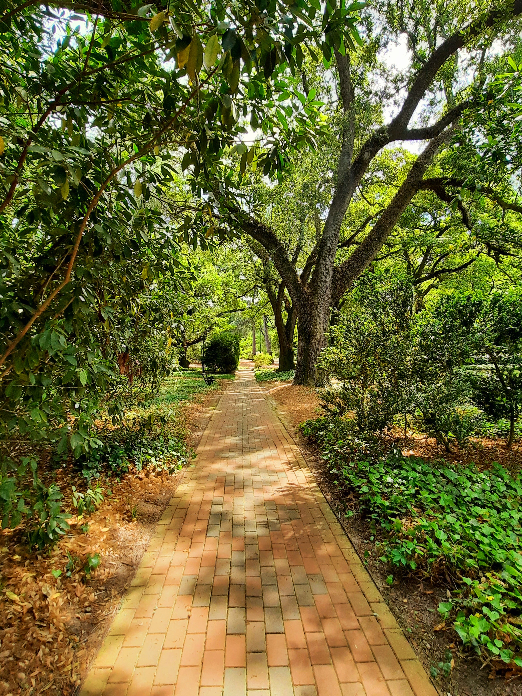
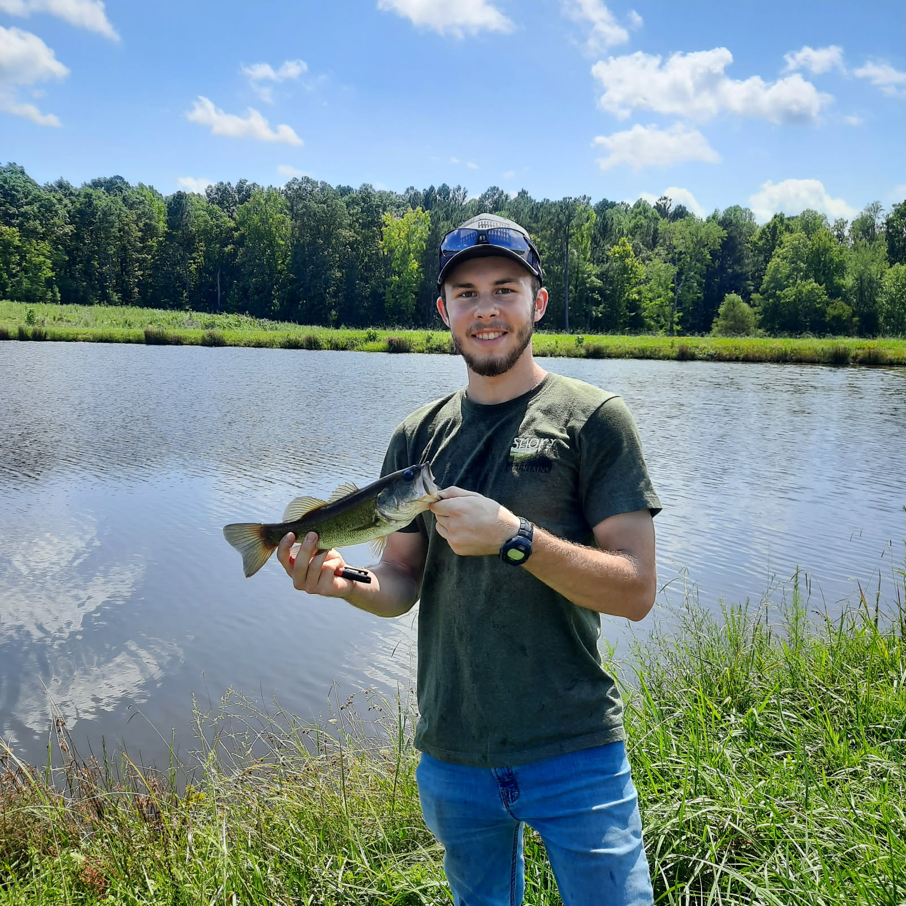

On making a place you can return to
Why the best personal systems feel less like rules and more like familiar rooms.
Read note ↗
I make wood-burned art and thoughtfully built objects that carry North Carolina history forward, while staying curious about the computers and tools shaping how we create today.
See what I’m working on ↘
I work slowly enough to notice things, and carefully enough to make the details count.
My days move between wood-burning, woodworking, writing, and the digital tools that help ideas take shape. This is where those threads meet.
A little more about me ↗Wood-burned artwork and useful objects, made by hand in North Carolina. Each piece starts with a chosen board and a purpose.

A mountain scene burned into the grain of the wood.

A playful kitchen board with hand-burned lettering.

A shaped hardwood board with a little shop humor.

Reclaimed North Carolina tobacco sticks made into a flag.

A state-shaped sign with a burned-in local story.

A kitchen reference illustrated directly onto the wood.

A coastal landmark burned onto a shaped wooden board.

I’m the maker behind Tarheel Maker, working across wood-burning, woodworking, writing, and digital tools.
My work is rooted in North Carolina: its landscapes, working traditions, local stories, and the people who keep making things by hand.
Tarheel Maker
A small blog about creative work, noticing the world, and finding a useful question inside a messy one.
Why the best personal systems feel less like rules and more like familiar rooms.
Read note ↗
A walk, a long train ride, and the ideas that only show up once you stop asking for them.
Read note ↗
Some projects need a deadline. Others need a little more time in the dark.
Read note ↗